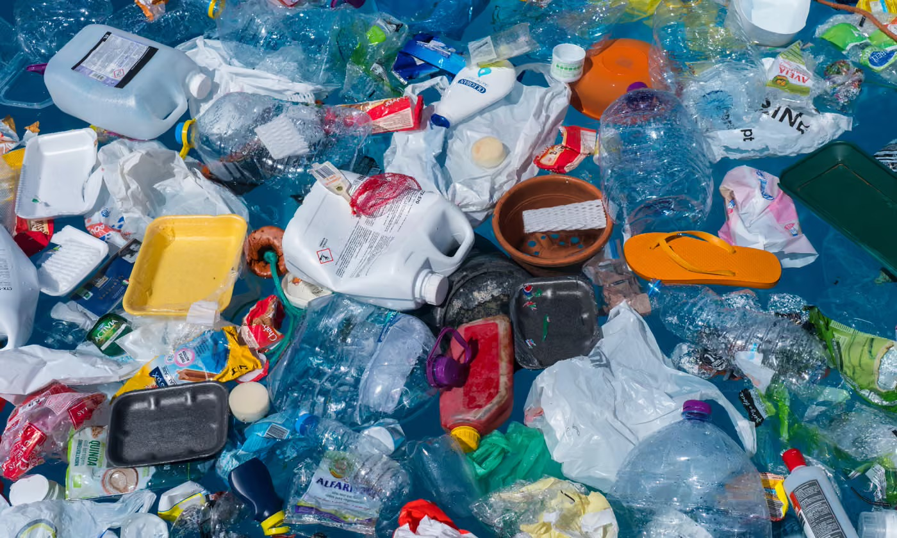
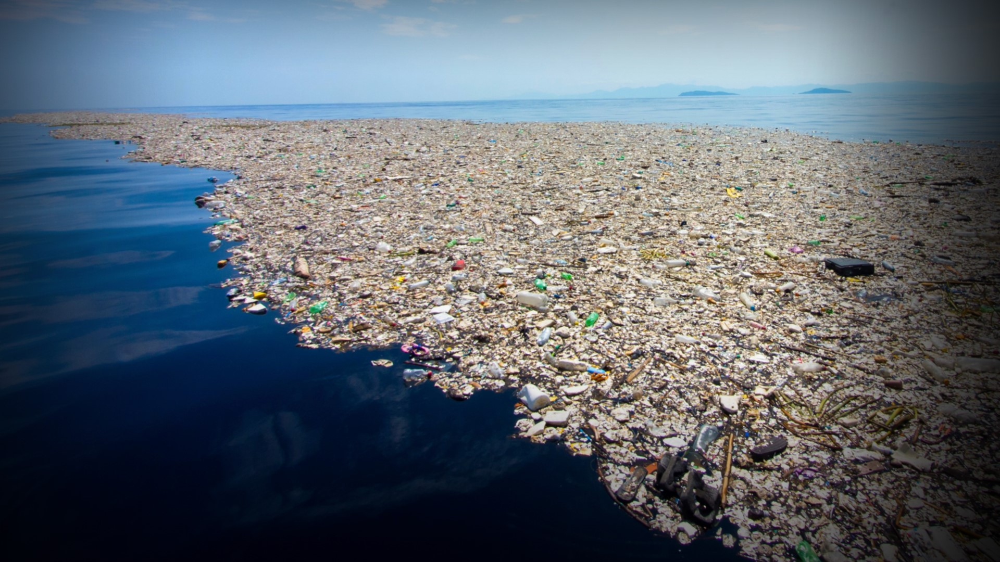
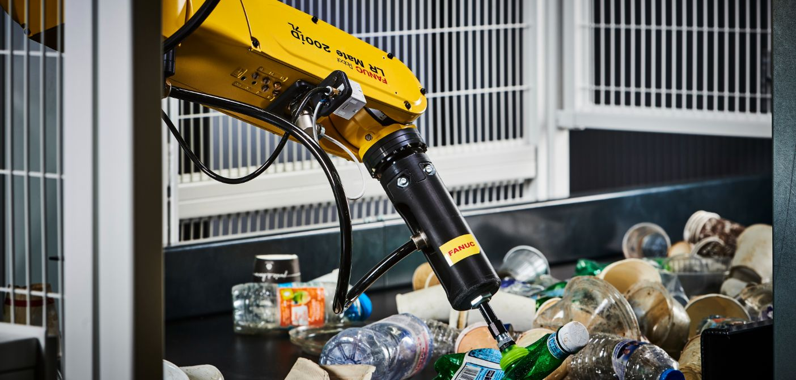
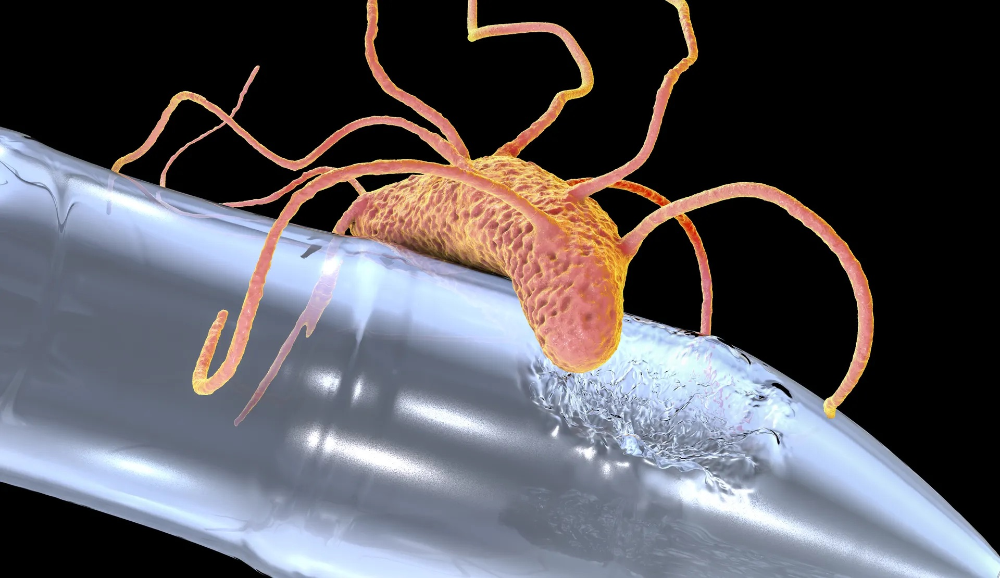

Exploring breakthrough technologies that could save our planet from drowning in plastic waste
Menu: The Problem | Solutions | Technologies | Resources

Since the 1950s, the world has produced approximately 8.3 billion tons of plastic. Of that massive amount, around 6.3 billion tons is now waste. The shocking reality? Only about 9% of all plastic waste ever produced has been recycled. The rest has been incinerated (12%) or sits in landfills and natural environments (79%).

Plastic has quietly woven itself into nearly every aspect of modern life. From food packaging to clothing fibres, it is difficult to go through a single day without encountering it. However, the convenience of plastic comes at a tremendous cost. Global plastic production has surged since the mid-twentieth century, and the vast majority of what has been produced still exists in some form today. Landfills continue to overflow, and an alarming amount of plastic waste finds its way into rivers, coastlines, and oceans, where it persists for centuries.
One might assume that recycling offers a reliable solution, but the reality is far less encouraging. Traditional mechanical recycling depends on waste being properly sorted by type, colour, and condition. When different plastics are mixed together or contaminated with food residue, the quality of the recycled output drops significantly, often making it unsuitable for reuse. According to research published in Resources, Conservation & Recycling, conventional sorting methods struggle to handle the sheer variety of plastic compositions found in household waste streams. As a result, much of what consumers place in recycling bins ultimately ends up in landfill anyway.
The environmental consequences extend well beyond overflowing waste sites. Plastic debris in marine environments breaks down into microplastics, which are ingested by fish, seabirds, and other wildlife, gradually entering the food chain. Studies have also linked microplastic exposure to potential risks for human health, though research in this area is still developing. What is clear, however, is that the current approach to managing plastic waste is fundamentally inadequate. Without meaningful changes in how we process and recycle these materials, the crisis will only deepen, making the search for innovative solutions more urgent than ever.
The scale of the plastic waste crisis demands solutions that go far beyond simply improving collection rates. Fortunately, researchers and engineers around the world are developing technologies that could fundamentally change how we deal with plastic. These innovations range from harnessing biology to redesigning the entire recycling process with artificial intelligence, and many of them are already showing promising results in real-world trials. What makes these approaches particularly exciting is that they do not merely slow the problem, they aim to reverse it.
Perhaps the most fascinating development has come from the field of enzyme engineering. In 2016, Japanese scientists discovered a bacterium called Ideonella sakaiensis near a plastic bottle recycling plant, and found that it naturally produces an enzyme (PETase) capable of breaking down PET plastic. Since then, researchers at institutions such as the University of Texas at Austin have used machine learning to engineer an improved version called FAST-PETase, which can degrade plastic at temperatures below 50 degrees Celsius. This is significant because it makes the process far more energy-efficient and practical for large-scale use. The enzyme works by breaking the chemical bonds within the plastic polymer, converting it back into its original building blocks, which can then be used to manufacture new plastic of virgin quality.
On the technological front, AI-powered sorting systems are transforming recycling facilities worldwide. Companies such as AMP Robotics have developed robotic arms guided by deep learning algorithms that can identify and sort plastics at a rate of up to 80 items per minute, far outpacing human workers. These systems use computer vision and near-infrared spectroscopy to distinguish between plastic types with remarkable precision, significantly reducing contamination in recycling streams. I personally find it encouraging that these technologies are not merely theoretical; they are already operational in facilities across North America and Europe, quietly reshaping how we handle waste.

Artificial intelligence is revolutionizing waste management through advanced sorting systems. These systems combine computer vision, machine learning, and robotics to identify and separate different types of plastics with unprecedented accuracy.

Scientists have discovered and engineered enzymes that can break down certain types of plastic at the molecular level. These enzymes, often derived from bacteria found in nature, can digest plastics that would normally take hundreds of years to decompose.
1. Engineered Bacteria for PET and Polyethylene Degradation: A Review
Comprehensive 2025 review of genetic and synthetic biology approaches to enhance bacterial degradation of plastics through enzyme engineering.
Read on Journal of Environmental Chemical Engineering
2. PET Plastic Degradation by the Marine Bacterium Alcanivorax
Study demonstrating how marine bacteria use specialized enzymes to degrade PET plastic, offering insights into ocean-based biodegradation mechanisms.
Read on PMC
3. Artificial Intelligence in Plastic Recycling and Conversion: A Review
Systematic review of AI's role in improving sorting accuracy, reducing contamination, and enhancing recycling processes.
Read on Resources, Conservation & Recycling
4. Recent Developments in Technology for Sorting Plastic for Recycling
Overview of recent developments in spectroscopy, machine learning, and robotics for high-accuracy plastic separation at scale.
Read on MDPI
Contact: ksina@uoguelph.ca
© 2026 Getting Rid of Plastic | CIS*1050 Web Design Assignment
Sources cited above.